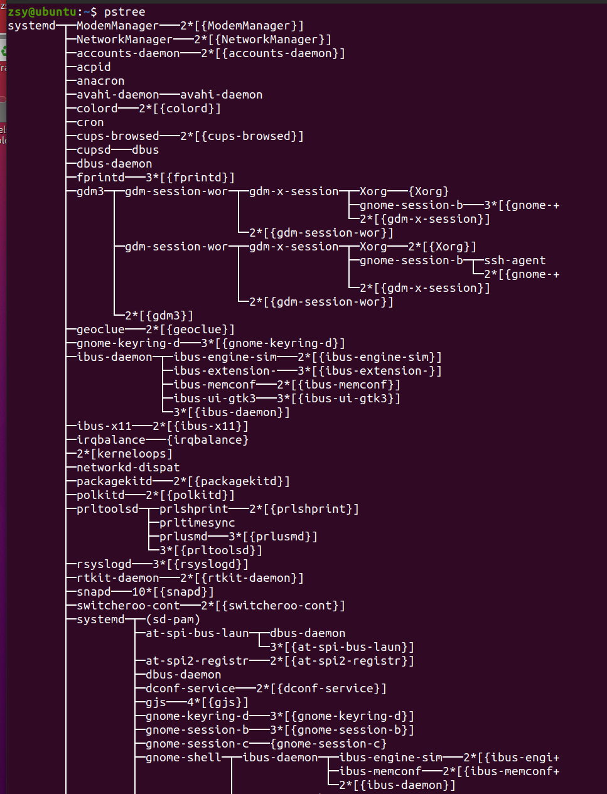

使用工具
使用top、vmstat、pidstat等
ap（apache bench）是一个常用的http性能测试工具
# 并发100个请求测试Nginx性能，总共测试1000个请求
$ ab -c 100 -n 1000 http://192.168.0.10:10000/
This is ApacheBench, Version 2.3 <$Revision: 1706008 $>
Copyright 1996 Adam Twiss, Zeus Technology Ltd,
...
Requests per second: 87.86 [#/sec] (mean)
Time per request: 1138.229 [ms] (mean)
...
-
第一个原因，进程在不停地崩溃重启，比如因为段错误、配置错误等等，这时，进程在退出后可能又被监控系统自动重启了。
-
第二个原因，这些进程都是短时进程，也就是在其他应用内部通过 exec 调用的外面命令。这些命令一般都只运行很短的时间就会结束，你很难用 top 这种间隔时间比较长的工具发现（上面的案例，我们碰巧发现了）。
-
用 pstree 就可以用树状形式显示所有进程之间的关系：

execsnoop
execsnoop 就是一个专为短时进程设计的工具。它通过 ftrace 实时监控进程的 exec() 行为，并输出短时进程的基本信息，包括进程 PID、父进程 PID、命令行参数以及执行的结果。
hgo
# 按 Ctrl+C 结束
$ execsnoop
PCOMM PID PPID RET ARGS
sh 30394 30393 0
stress 30396 30394 0 /usr/local/bin/stress -t 1 -d 1
sh 30398 30393 0
stress 30399 30398 0 /usr/local/bin/stress -t 1 -d 1
sh 30402 30400 0
stress 30403 30402 0 /usr/local/bin/stress -t 1 -d 1
sh 30405 30393 0
stress 30407 30405 0 /usr/local/bin/stress -t 1 -d 1
...
小结
- 第一，应用里直接调用了其他二进制程序，这些程序通常运行时间比较短，通过 top 等工具也不容易发现。
- 第二，应用本身在不停地崩溃重启，而启动过程的资源初始化，很可能会占用相当多的 CPU。